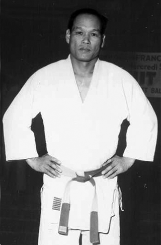

MICHIGAMI Haku est né en 1912. Il est arrivé en FRANCE en 1953 et y restera jusqu'à son décès en 2002 !
MICHIGAMI Sensei a participé notamment à la formation d'Anton GEESINK, premier non-japonais à devenir Champion du Monde en 1961 et Champion Olympique en 1964.
MICHIGAMI Sensei était d'une logique rigoureuse pour chaque technique et son enseignement des katas ne supportait aucun « à-peu-près ».
« Si cinéma, ce n'est pas nécessaire étudier ! » disait-il de sa voix forte.


MICHIGAMI Sensei était aussi un expert de ken-jutsu.

« MICHIGAMI sensei a été mon maître et celui d'Esteban CARRETERO-HEREDIA pendant de nombreuses années. » Michel